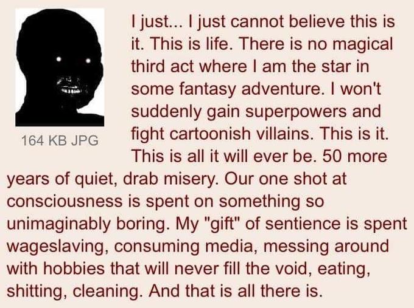
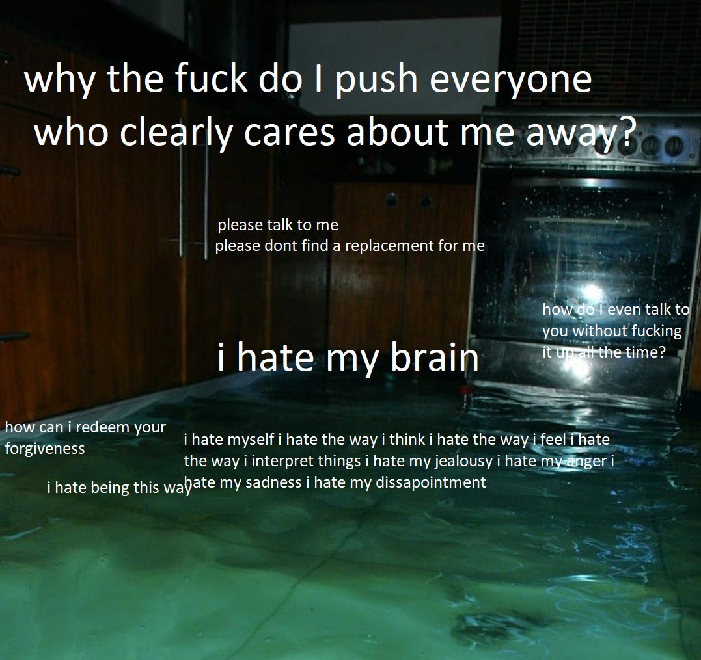
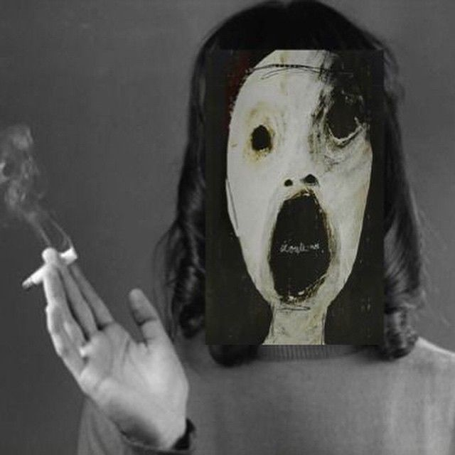
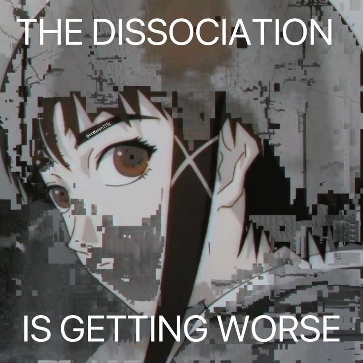
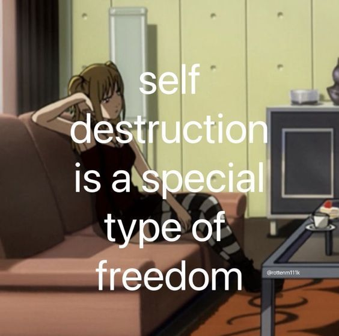
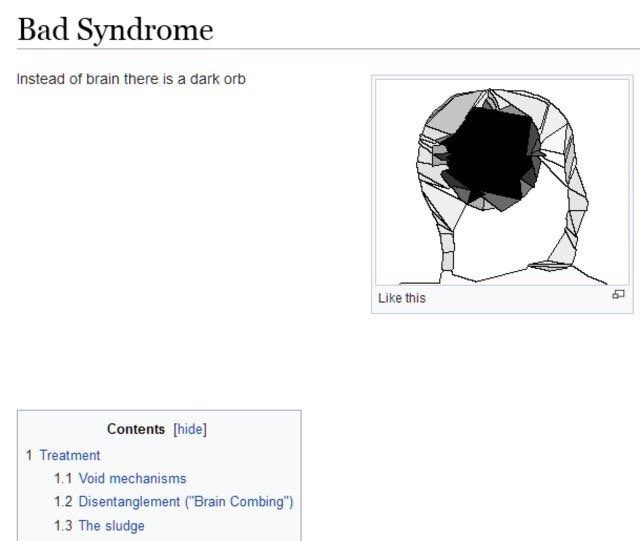

#13 (Core Chronicles: A Symphony of Gore, Anime, and Math)
In a realm of randomness, my thoughts shall soar,
Where tales of gore and wonder I explore.
A computer, its heart a 2000-core beast,
Calculating mysteries as memories increase.
...
Amidst the chaos, anime's allure,
Characters animated, their spirits pure.
Mathematical equations dance through the air,
Numbers and symbols, a language so rare.
In darkness dwells a tale of blood and strife,
A chilling narrative that cuts like a knife.
A computer's core, a labyrinth divine,
Complexity unraveling, a tech wonder of mine.
...
Anime's vibrant hues, emotions take flight,
Their stories painting dreams in the dead of night.
Mathematics whispers secrets through its equations,
Unlocking the universe's vast manifestations.

Within this verse, I weave a twisted tale,
Of gore and computers, where nightmares prevail.
A 2000-core processor, humming alive,
Unleashing power as imagination thrives.
...
Anime's realm, where heroes rise and fall,
With swords unsheathed and destinies call.
Mathematics, the language that shapes our world,
Logic and numbers, unfurled and unfurled.
A macabre symphony, violence it plays,
In this poem's realm, the gore holds sway.
A 2000-core machine, a mind so vast,
Processing data, present and past.
...
Anime's essence, a visual delight,
Characters bound by their will to fight.
Mathematics, the structure that holds it all,
Equations and theorems, standing tall.
In a twisted world where darkness dwells,
Gore's haunting tales are the stories it tells.
A computer with a 2000-core might,
Processes information, a digital sight.
...
Anime's vibrant colors, emotions ignite,
Heroes and villains in an endless fight.
Mathematics' beauty, its patterns divine,
Unlocking the secrets of the universe's design.

A tapestry woven with blood-stained threads,
In this poem's realm, gore raises its heads.
A computer, its 2000 cores ablaze,
Calculating, processing, in myriad ways.
...
Anime's allure, a canvas of dreams,
Characters animated, their stories it seems.
Mathematics, the language of patterns and more,
Unveiling the mysteries we're destined to explore.

Within this verse, gore dances with glee,
A twisted symphony for all to see.
A computer's core, a computational force,
2000 threads entwined, a powerful source.
...
Anime's world, vibrant and alive,
Imaginations soar, passions strive.
Mathematics' precision, an elegant chore,
Solving puzzles, unraveling life's score.

Through the corridors of gore we tread,
A haunting realm where shadows are spread.
A computer's 2000-core heart beats fast,
...
Processing data, present and past.
Anime's tapestry, a visual delight,
Characters moving, their stories take flight.
Mathematics' language, precise and exact,
Unveiling truths, reasoning intact.

Within this poem's realm, gore finds its place,
A macabre tapestry, a haunting embrace.
A computer's core, a 2000-thread dance,
Processing power with each fleeting chance.
...
Anime's realm, where emotions ignite,
Characters painted with strokes of pure light.
Mathematics' symphony, numbers and laws,
Unlocking the secrets the universe withdraws.

Through this poem's journey, gore unfurls,
A chilling tale, where darkness curls.
A computer's core, 2000 threads intertwine,
...
Processing information, a feat so divine.
Anime's realm, where imagination thrives,
Stories unfold, as passion.